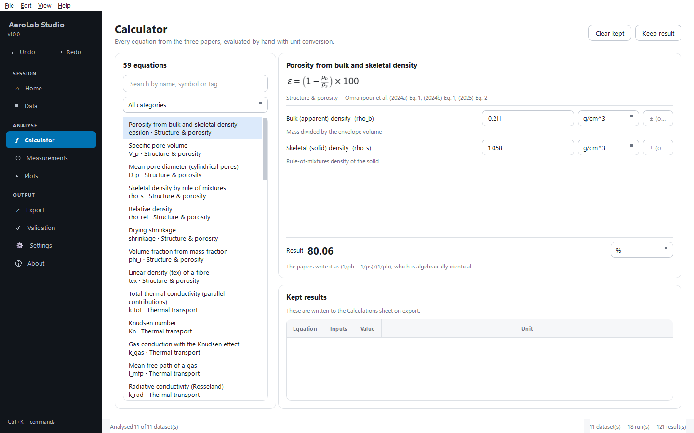
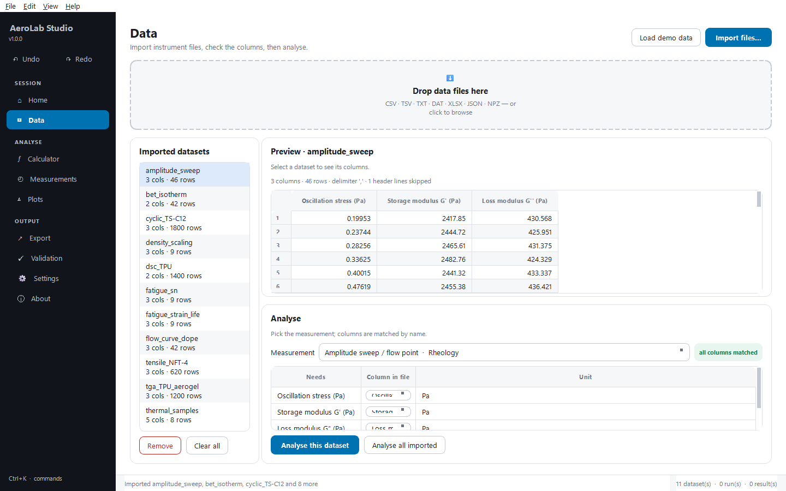

What I work on
Making energy materials survive the conditions they are actually used in
My research sits between chemistry and engineering: designing materials, measuring what they do, and explaining why. Most of it has been about electrolytes — the part of an energy-storage device that usually fails first when it gets too cold, too hot or too dry.
In my MSc work I tuned ion mobility and molecular confinement in gel electrolytes, and showed supercapacitors that keep cycling far below freezing. My PhD at the Microcellular Plastics Manufacturing Laboratory moves this into polymer processing: lightweight aerogel fibres for thermal insulation, including clothing and wearable applications.
Methods I use daily. Cyclic voltammetry, galvanostatic charge–discharge, electrochemical impedance spectroscopy and chronoamperometry for devices; SEM, TEM, XRD, EDX, Raman, FTIR, UV–Vis, BET and TGA for materials. Synthesis by electrospinning, sol–gel, hydrothermal routes and electrodeposition.
12 peer-reviewed articles
Publications
-
E. Yousef, A. A. Ismail, G. E. Khedr, N. K. AllamJournal of Materials Chemistry AJIF 9.5Q1First author
-
A. A. Akar, M. A. Moselhy, G. E. Khedr, E. Yousef, N. K. AllamChemical Engineering JournalJIF 13.2Q13 citations
-
M. A. Moselhy, G. E. Khedr, E. Yousef, A. A. Akar, N. K. AllamJournal of Materials Chemistry AJIF 9.5Q13 citations
-
E. Yousef, G. E. Khedr, A. A. Akar, N. K. AllamChemical Engineering JournalJIF 13.2Q15 citationsFirst author
-
E. Yousef*, A. A. Akar*, A. A. M. Ismail, G. E. Khedr, N. K. AllamJournal of Materials Chemistry AJIF 9.5Q115 citationsJoint first author
-
A. A. Ashour, A. M. Abdelmohsen, G. E. Khedr, K. E. Salem, I. M. Badawy, E. Yousef, A. M. Agour, D. Higgins, N. K. AllamACS Applied Materials & InterfacesJIF 8.2Q17 citations
-
E. Yousef, M. M. Taha, M. K. M. Ali, N. K. AllamACS Applied Polymer MaterialsJIF 5.0Q114 citationsFirst author
-
E. Yousef, M. K. M. Ali, N. K. AllamJournal of Applied Polymer ScienceJIF 2.8Q215 citationsFirst author
-
E. Yousef, M. K. M. Ali, N. K. AllamOptical MaterialsJIF 4.2Q130 citationsFirst author
-
E. Yousef, M. Salah, H. A. Yousef, M. Ibrahim, M. S. Mostafa, H. M. Abd Elkabeer, M. Khalaf, A.-H. M. Rasmey, I. MoradPolymer BulletinJIF 4.0Q217 citationsFirst author
-
M. Ammar, E. Yousef, S. Ashraf, J. BaltrusaitisSeparationsJIF 2.7Q323 citations
-
M. Ammar, E. Yousef, M. A. Mahmoud, S. Ashraf, J. BaltrusaitisSeparationsJIF 2.7Q369 citations
Journal impact factors and citation counts as recorded in September 2026. The current list is on Google Scholar.
Research tools I built
Software for the laboratory
I build desktop tools that take instrument files and return finished results and publication figures. I use AI-assisted development for the implementation: I provide the scientific requirements, the equations and the experimental logic, and direct the build. My background is experimental science first and software second, and I would rather say that plainly than overstate it.
AeroLab Studio
Open sourceAn analysis workbench for aerogel-fibre research. It implements every equation and measurement from three papers on thermoplastic-polyurethane aerogels, applied by hand or automatically, and exports straight into OriginLab and Excel.
- 59 equationsEvery relation in the source papers, with unit conversion on each input and uncertainty propagated by central differences.
- 11 measurementsStress–strain, cyclic loading, S–N, strain–life, density scaling, TGA, DSC, thermal properties, BET, Herschel–Bulkley, amplitude sweep.
- Automatic importCSV, TSV, TXT, DAT, Excel, JSON and NumPy — instrument preambles, unit rows and European decimals handled.
- 26 validation casesRecomputes values printed in the papers. Two are recorded as disagreements with the papers, with the reasoning stated, rather than quietly adjusted.




Research positions
Experience
-
Sep 2026 — present
Research Assistant
Microcellular Plastics Manufacturing Laboratory, University of TorontoDoctoral research on polymeric aerogels reinforced with nanofibres for clothing and thermal-insulation applications, under Prof. Chul B. Park.
-
May 2023 — Aug 2026
Research Assistant
Energy Materials Laboratory, The American University in CairoSynthesis and characterization of polymeric membranes, semiconductors and quasi-solid-state electrolytes. Built and tested supercapacitor devices, ran full electrochemical characterization, and set up a UV reactor for UV-shielding work.
-
2021 — May 2023
Undergraduate Research Assistant
Suez UniversityNanofibrous scaffolds for wound healing under STDF grant 45441. The laboratory had no electrospinning system, so I built a working setup from available parts and tuned it until it produced stable fibres. Also applied electrocoagulation to contaminant removal from wastewater.
Background
Education, awards and service
-
2026 — 2030
PhD, Mechanical & Industrial Engineering
University of Toronto -
2023 — 2026
MSc, Nanotechnology — GPA 4.0 / 4.0
The American University in CairoThesis: “Tuning Ion Mobility and Molecular Confinement in High-Performance Polymer Electrolytes for Energy Storage”.
-
2018 — 2022
BSc, Physics (Engineering Physics)
Suez University — Very Good with Honors, ranked third in the class
Awards
- Allehdaan Best Thesis Award 2026
- School of Sciences & Engineering Honors, AUC 2026
- Best Researcher Award, Science Father 2024
- Laboratory Fellowship, AUC 2024
- University Fellowship, AUC 2023
Peer review
- Journal of Materials Science: Polymers 2025
- Journal of Materials Science: Materials in Electronics 2025
- Journal of Polymers and the Environment 2025
- Cellulose 2025
- Polymer Bulletin 2025
- Plasmonics 2025
- Polymer Engineering & Science 2025
Leadership
Founder and Vice President of the Innovative Nanotechnology Club at AUC, and co-founder of the Sustainability, Energy and Nanomaterials Association student chapter. Elected Vice President of the AUC student chapter of The Electrochemical Society. I have organized lecture series, workshops, competitions and outreach events around energy and nanotechnology.